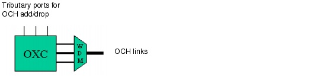
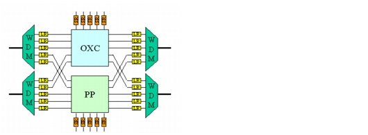
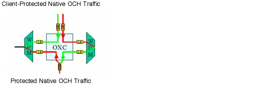
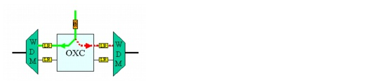

Concepts and Models > Node Modeling Capabilities in SP Guru Transport Planner > Optical Nodes: Non-Blocking OXC
Optical Nodes: Non-Blocking OXC
An OCC node can cross-connect optical traffic only and no SONET traffic; therefore the OCC node is equipped with an OXC by default. The OXC can be an optical or an electrical switching matrix (see Optical Transparency for more information). The trunk ports of the OXC connect to the wavelengths of the WDM line systems of OCH links that terminate in the node. The OXC switches wavelengths between different WDM line systems (transit traffic) or between the OXC tributary ports and the WDM line systems (local traffic).
Figure 2-16 OXC in OCC Node

Patch Panel
OCH-layer traffic consists of wavelengths that are transported on WDM line systems and are cross-connected by OXCs within nodes. Some traffic can be static, which does not need the flexible (and expensive) switching capabilities of the OXC. This traffic can be labeled hardwired in SP Guru Transport Planner and is not switched using the OXC, but through a static patch panel (PP). If both hardwired and non-hardwired traffic coexist in a node, the node includes both an OXC and a PP (see Figure 2-17). You can also define an entire node as static; in this case, a patch panel cross-connects all traffic (whether hardwired or not) and no OXC is present in the node.
Figure 2-17 OXC and Patch Panel (Opaque Scenario)

Protection Options
If OCH traffic is client-protected, two OXC tributary ports interconnect two short-reach transponders (in opaque mode) or two long-reach transponders (in transparent mode) to guide the working and protection constituents of traffic in the OXC. This traffic is switched toward the OXC trunk ports. The OXC is connected to the WDM line system, either through long-reach transponders (opaque mode) or directly (transparent mode).
Figure 2-18 Impact of Client Protection on Required Transponders and OXC Ports (Opaque Scenario)

If the OCH traffic is not client-protected, the OCH layer handles the protection switching. Most OXCs today cannot do protection switching (in contrast with DXCs and IXCs, which are electrical switches that support protection switching). Therefore, a protection transponder outside the OXC does the actual switching. The protection transponder takes one signal as input and splits the signal into a working and protection path; these paths feed into two tributary OXC ports. The OXC switches the working and protection paths to the appropriate trunk ports, which are connected to the WDM line system. The protection transponder comes in short-reach (opaque mode) and long-reach (transparent mode) versions.
Shared path protection differs from 1+1 protection in this regard: 1 + 1 protection uses single-ended switching, while shared protection uses dual-ended switching.
- 1+1 protection uses single-ended switching. Therefore only the destination node does switching, while the source node duplicates the traffic (since the OXC cannot broadcast traffic this way, the network uses a protection transponder instead).
- Shared protection uses dual-ended switching, which is done by the OXC. The OXC needs only one tributary port to terminate shared path-protected traffic. One OXC trunk port is dedicated for the working path, while another OXC trunk port is used for the protection path (this trunk port can be shared with other protection paths).
Figure 2-19 Shared Path Protection in OXC (Opaque Scenario)

| Home © 1987-2007 OPNET Technologies, Inc. All Rights Reserved. This software may be covered by one or more U.S. Patents. See complete patent notice in the Legal Notices section. OPNET Support Center |